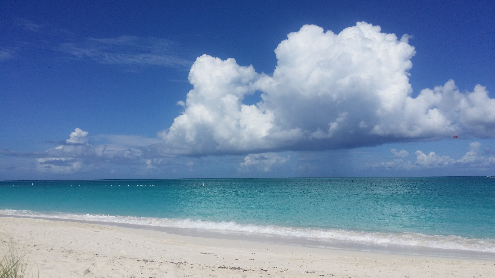
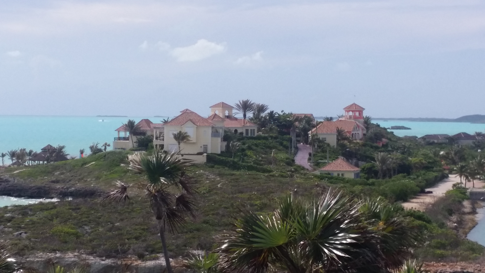
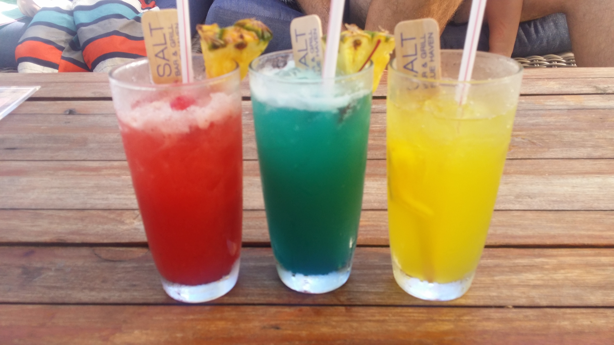

Turks and Caicos
Fanelle Family Vacation
November 2015
We traveled to the beautiful and hot Turks and Caicos in
November of 2015. We stayed in the glorious Coconut Beach Villa that made us feel like we were
a celebrity lifestyle.
We were right on the beach in Sapodilla Bay.
We spent our days swimming (and drinking) in the bay. Here are some pictures of
the view we enjoyed all week.

Grace Bay
There are many different beaches to explore in
Turks and Caicos. One of our favorites was Grace Bay. The beaches
were immaculate with white
sand and crystal blue water.

This is where we found Sofia and Joe!

We imagine they live in this house....which we found not too far away.
We went exploring further into town and discovered where the rich people hang out with their yachts. In an effort to live our week-long celebrity lifestyle, we stopped at a place called Salt to enjoy some afternoon cocktails. The sun was shining and we were happy.

To wrap up our trip, we did some beach aerobics. You can see my dad in the background here...


For more information about the beautiful Turks and Caicos, click here.